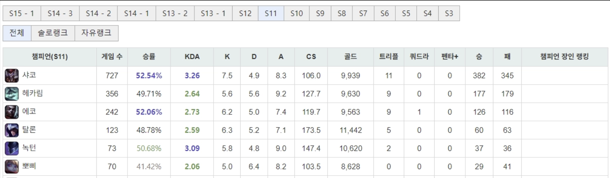
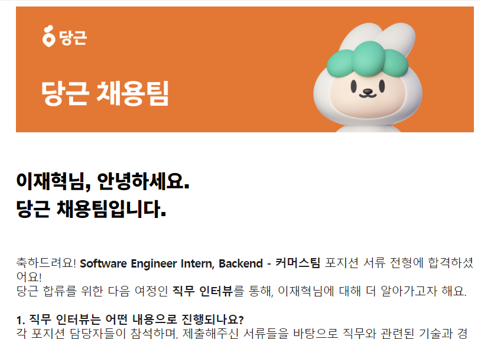
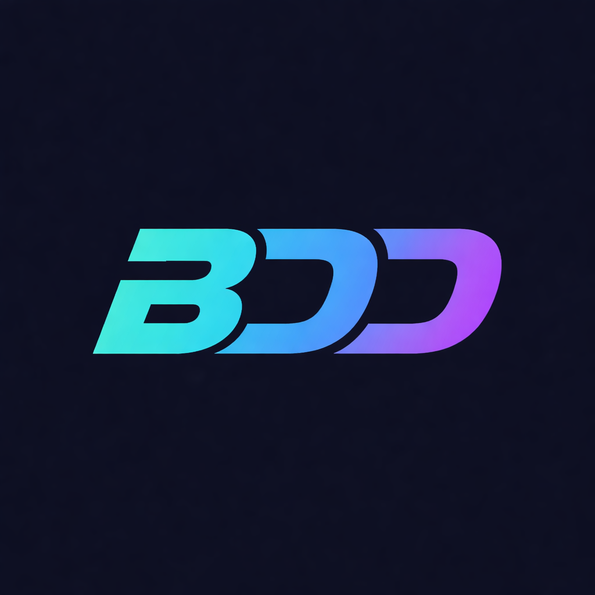
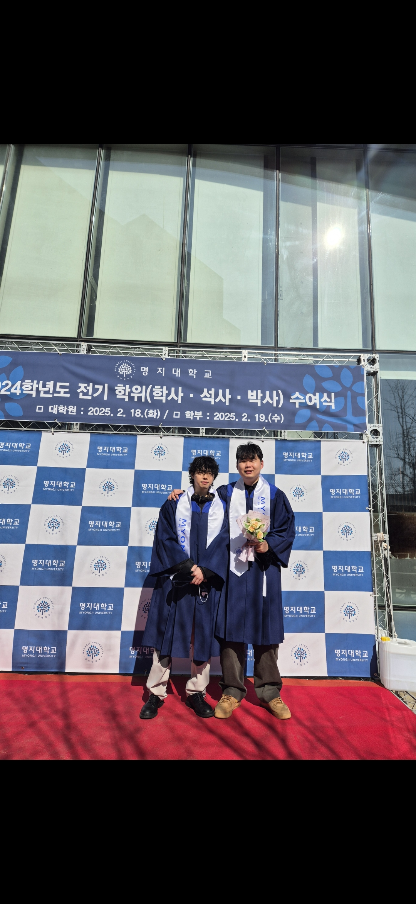
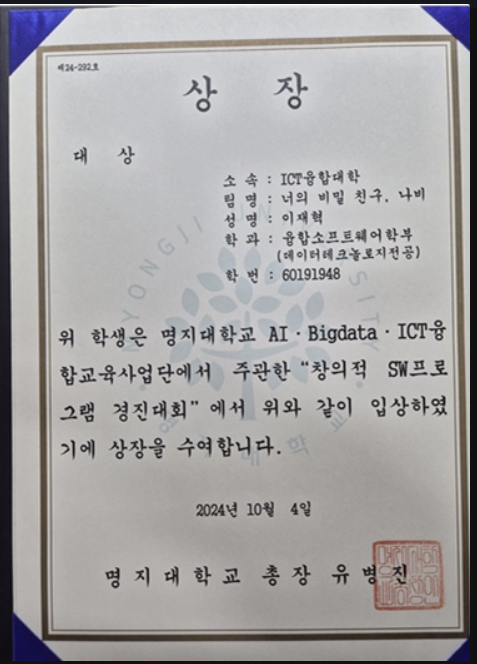
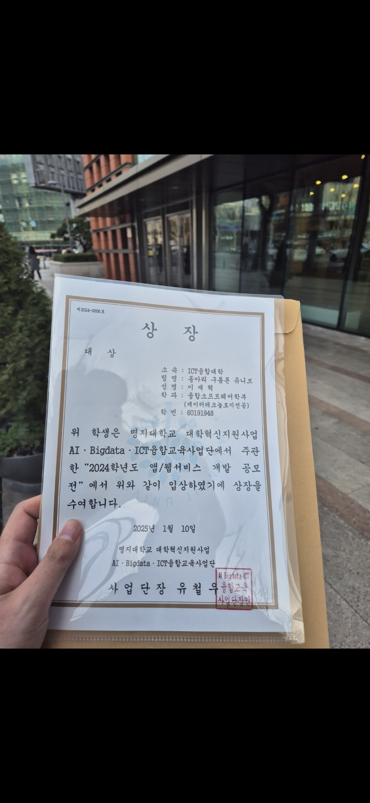
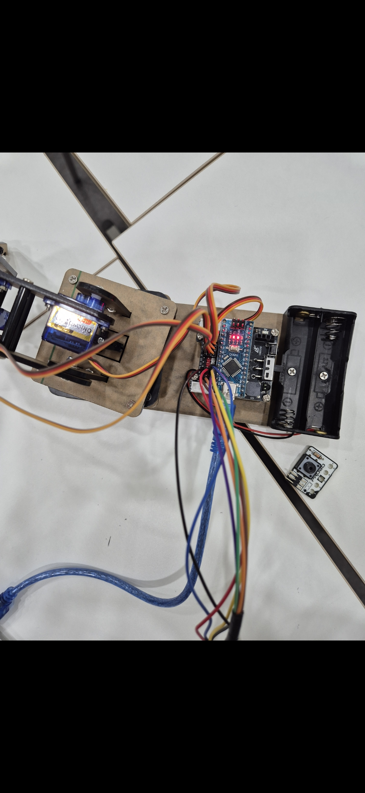
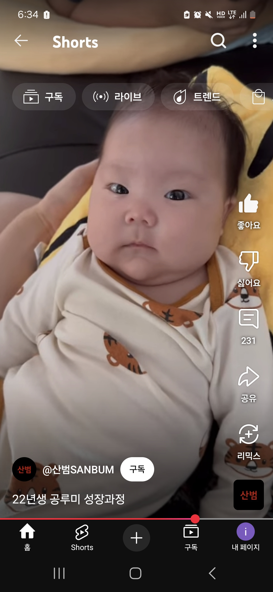
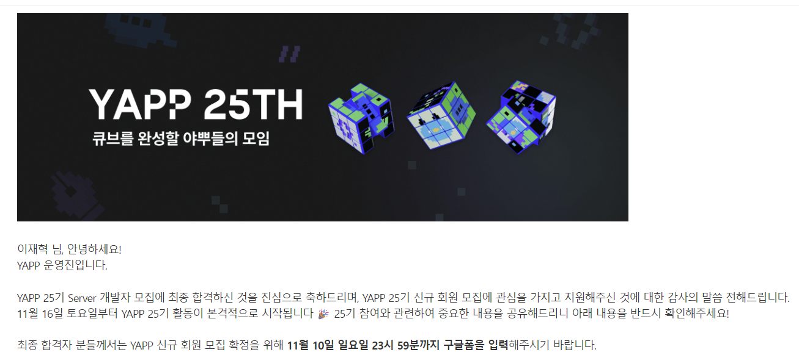

호남두 (김호남) - 인생 강의
축구선수 김호남 선수의 유튜브 채널에서 인생 강의를 자주 찾아 듣습니다. 14년간의 프로 생활과 아버지의 이른 죽음을 딛고 일어선 이야기가 큰 울림을 줍니다. 현재는 축구 교육가이자 KFA 이사로 활동하며 "올바른 교육이 한국 축구의 뿌리"라는 신념을 전하고 있습니다.
요즘 MySQL 공부에 푹 빠져있습니다.
데이터 분야를 전공해서 데이터베이스 부분에서 장점을 살리고 싶어 꾸준히 공부 중인 사람입니다. 운동은 축구, 격투기에 큰 관심이 있어요.
| 이름 | 이재혁 |
|---|---|
| MBTI | ISFP |
| 취미 | 격투기 보기, 축구, OTT 보기 |
| 좋아하는 음식 | 다 좋아하지만 특히 피자 |
나의 이모저모









축구선수 김호남 선수의 유튜브 채널에서 인생 강의를 자주 찾아 듣습니다. 14년간의 프로 생활과 아버지의 이른 죽음을 딛고 일어선 이야기가 큰 울림을 줍니다. 현재는 축구 교육가이자 KFA 이사로 활동하며 "올바른 교육이 한국 축구의 뿌리"라는 신념을 전하고 있습니다.
전 UFC 파이터 김동현 선수님의 가치관을 요즘 스턴건TV를 보며 많이 배우고 있습니다. 한국 최초의 UFC 웰터급 랭커 선수로서 세계 무대에 선 이야기, 그리고 후배 양성에 힘쓰는 모습이 인상적입니다.
오늘 새롭게 배운 것들을 기록합니다.
웹 페이지의 뼈대를 HTML로 구성하고, CSS로 스타일링하며, JavaScript로 동적 기능을 추가하는 방법을 배웠다. 시멘틱 태그의 중요성과 DOM 제어 방법을 학습했다.